ダウンロード
最新の版を確認しています…

AI コンパニオン「ライム」
最新の版を確認しています…
RAiM-android.apk を開きます。開発中に PC から直接入れた版が残っていると、インストールに失敗することがあります。 その場合は古い RAiM を一度アンインストールしてから入れ直してください（最初の1回だけです）。
RAiM フォルダの RAiM.exe を起動します。
unity フォルダの中身はライム本体です。RAiM.exe と同じ場所に置いたままにしてください。
RAiM フォルダを消して、新しい zip を展開します。ログイン状態や設定は残ります。iPhone 版はこのページからは配布していません。 App Store の外でアプリを配るには Apple の有料の開発者登録が必要なためです。 試したい場合は開発メンバーに声をかけてください。